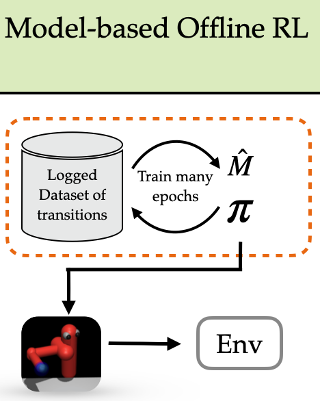
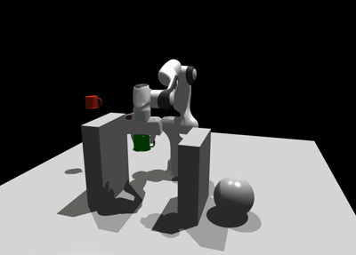
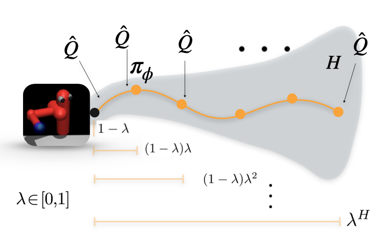
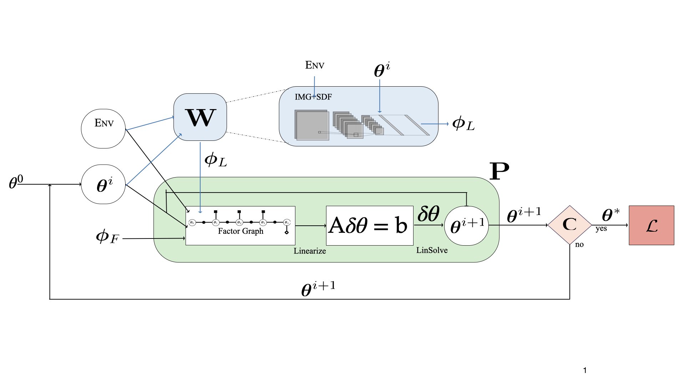
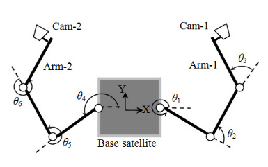

Mohak Bhardwaj
mohak dot bhardwaj at gmail dot com


I am a Staff Research Scientist at Boston Dynamics working on reinforcement learning for the Atlas robot. I completed my Ph.D. in Computer Science from University of Washington, advised by Byron Boots. My thesis research focused on developing practical machine learning algorithms and systems that enable robots to operate in dynamic real-world environments with minimal human supervision. Specific topics include integrating model-predictive control with reinforcement learning, learning-based methods for accelerated motion planning, and offline reinforcement learning.
Before transferring to University of Washington, I spent a year as a Ph.D. Robotics student at Georgia Institute of Technology. Prior to that I was a Robotics Engineer at Near Earth Autonomy, Inc. I received my Master’s in Robotic Systems Development from the Robotics Institute at Carnegie Mellon University, where I conducted research with The Air Lab under the guidance of Sanjiban Choudhury and Dr. Sebastian Scherer, and my B.Tech in Mechanical Engineering from the Indian Institute of Technology (BHU), Varanasi.
During my Ph.D study, I had the amazing opportunities to intern at various industry research labs. In Summer 2022, I was a Research Scientist Intern at Google DeepMind, London in the Controls Team lead by Martin Reidmiller. I spent Fall 2020 and Summer 2019 as an intern at NVIDIA Seattle Robotics Lab working with Dieter Fox, Fabio Ramos and Byron Boots.
When not busy with research, you'll catch me doing stand-up and improv comedy or practicing Capoeira.
Research
Pre-prints
-
Dynamic Non-Prehensile Object Transport via Model-Predictive Reinforcement Learning N. Jawale, B. Boots, B. Sundaralingam*, M. Bhardwaj [Arxiv]
Journal Publications

Conference Publications
-

Adversarial Model for Offline Reinforcement Learning
M. Bhardwaj*, T. Xie*, B. Boots, N. Jiang, C. Cheng
Conference on Neural Information Processing Systems, 2023
[Arxiv] [Proceedings] - 
- 
-

- 
-

-

-

Real-time dynamic singularity avoidance while visual servoing of a dual-arm space robot
P. Mithun, V.V. Anurag, M. Bhardwaj, S.V. Shah
Advances in Robotics, 2015
[Paper]